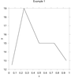

Chapters:
1: Introduction
2: Simple example
3: Invocation
4: Finer Control
5: X-Y Plots
6: Contour Plots
7: Image Plots
8: Examples
9: Gri Commands
10: Programming
11: Environment
12: Emacs Mode
13: History
14: Installation
15: Gri Bugs
16: Test Suite
17: Gri in Press
18: Acknowledgments
19: License
Indices:
Concepts
Commands
Variables
|
5: X-Y Plots
5.1: Linegraphs
The following Gri commands will draw a linegraph. For the output graph
(see Getting More Control).
This plots a simple linegraph:

# Example 1 -- Linegraph using data in a separate file
open example1.dat # Open the data file
read columns x y # Read (x,y) columns
draw curve # Draw data curve
draw title "Example 1" # Title above plot
|
Here's what the command lines mean:
-
The first line is a comment. Anything to the right of a hash-mark
`
#' is considered to be a comment. (This symbol is also called a
"pound".)
-
The second line is blank. Gri ignores blank lines between commands.
-
`
open example1.dat' tells Gri to open the indicated file (in
the current directory) as an input data file. You can specify files
outside the current directory by using conventional unix-shell pathnames
(e.g., `open ~/data/TS/section1/T_S.dat' or
`open ../data/file.dat'). You can even use "synonyms" (see Synonyms.) in
filenames, as in `open \BASENAME.dat'.
-
`
read columns x y' tells Gri to start reading columnar data,
the first column being `x', the second `y'. `x' and
`y' are predefined names for whatever ends up on the horizontal and
vertical axes.
The number of data needn't be specified. Gri reads columns until a
blank line or end-of-file is found. You can tell Gri how many lines to
read with a command like `read columns 10 x y'. Multiple datasets
can reside within one file; provided that they are separated by a single
blank line, Gri can access them by multiple `read' commands.
Like C, Gri expects numbers to be separated by one or more spaces or
tabs. Commas are not allowed. If the columns were reversed, the
command would be `read columns y x'. If there were an initial
column of extraneous data, the command would be
`read columns * x y', or `read columns x=2 y=3'
(see Read Columns).
-
`
draw curve' tells Gri to draw a curve connecting the points
in the `x' and `y' columns. A nice scale will be selected
automatically. (You can change this or any other plot characteristics
easily, as you'll see later.)
-
`
draw title' tells Gri to write the indicated string
centered above the plot. The title must be enclosed in quotes.
-
`
quit' tells Gri to exit.
Gri will draw axes automatically, and pick its own scales.
If you wish to draw several curves which cross each other, you should
try using `draw curve overlying' instead of
`draw curve'. This will make it easier to distinguish the
different curves.
5.2: Scattergraphs
This section contains two examples, the first being a fuller explanation
of all the bells and whistles, the second being a simple explanation
of how to get a very quick plot, given just a file containing a matrix
of grid data.
To get a scattergraph with symbols at the data points, substitute
`draw symbol' for `draw curve'. Both symbols and a curve
result if both `draw curve' and `draw symbols' are used.
See see Getting More Control for an example.
By default, the symbol used is an x. To get another symbol, use a
command like `draw symbol 0' or `draw symbol plus'.
To change the symbol size from the default of 0.2 cm use commands like
`set symbol size 0.1' to set to 1 mm (see Set Symbol Size).
5.2.1: Coding data with symbols
To get different symbols for different data points, insert symbol codes
from the above list as a column along with the x-y data, and substitute
the command `read columns x y z', and then draw them with
`draw symbol'. Gri will interpret the rounded-integer
values of the `z' columns as symbol codes. Note that even if
you've read in a z column which you intend to represent symbols, it will
be overridden if you designate a specific symbol in your
`draw symbols' command; thus `draw symbol 0' puts a `+'
at the data points whether or not you've read in a symbol column.
5.2.2: Drawing a symbol legend
The following example shows how you might write a symbol legend for a
plot. The legend is drawn 1 cm to the right of the right-hand side of
the axes, with the bottom of the legend one quarter of the way up the
plot; see Draw Symbol Legend. The lines in the legend are
double-spaced vertically. To change the location of the legend, alter
the `.legend_x. =' and `.legend_y. =' lines. To change the
spacing, alter the `.legend_y. +=' line.
set x axis -1 5 1
set y axis -1 5 1
read columns x y z
0 0 0
1 1 1
2 2 2
3 3 3
draw symbol
# Legend
.leg_x. = {rpn ..xmargin.. ..xsize.. + 1 +}
.leg_y. = {rpn ..ymargin.. ..ysize.. 4 / +}
draw symbol legend 0 "Foo" at .leg_x. .leg_y. cm
.leg_y. += {rpn "M" ascent 2 *}
draw symbol legend 1 "Bar" at .leg_x. .leg_y. cm
.leg_y. += {rpn "M" ascent 2 *}
|
5.2.3: Coding data with symbol colors
To get different colors for different symbols, read a color code into
the z column, and do for example `draw symbol bullet color hue z'.
The numerical color code ranges from 0 (red) through to 1, passing
through green at 1/3 and blue at 2/3.
5.3: Formula Plots
There are two methods for formula graphs.
- Use the system yourself.
Do as in this example:
open "awk 'BEGIN{for(i=0;i<3.141;i+=0.05)\
{print(i,cos(i))}}' |"
read columns x y
close
draw curve
|
- Let Gri calculate things for you
The simplest is to let Gri
calculate things for you with the `create columns from function'
command (see Create). The command assumes that you have defined
the synonym called `\function' which defines `y' in terms of
`x'.
Gri uses the program `awk' to create the columns, and cannot work
without it.
Here is an example of using `create columns from function':
show "First 2 terms of perturbation expansion"
set y axis name horizontal
set y name "sea-level"
set x name "$\omega$t"
\b = "0.4" # perturbation parameter b=dH/H
\xmin = "0"
\xmax = "6.28"
\xinc = "3.14 / 20"
\function = "cos(x)"
set x axis \xmin \xmax
create columns from function
draw curve
draw title "SOLID LINE \function"
\function = "(cos(x)+\b/2*(1-cos(2*x)))"
create columns from function
set dash 1
draw curve
draw title "DASHED LINE \function"
draw title "b = \b"
|
Here's another example, in which the curve `y = 1/(\int + \sl*x)'
is drawn through some data. Note how `sprintf' is used to set
`\xmin' and `\xmax' using the scales that Gri has determined
in reading the data.
open file.data
read columns x y
close
draw symbol bullet
\int = "-0.1235"
\sl = "0.003685"
sprintf \xmin "%f" ..xleft..
sprintf \xmax "%f" ..xright..
\function = "1/(\int + x * \sl)"
create columns from function
draw curve
|
|


{kind=link}